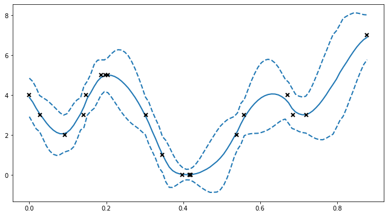
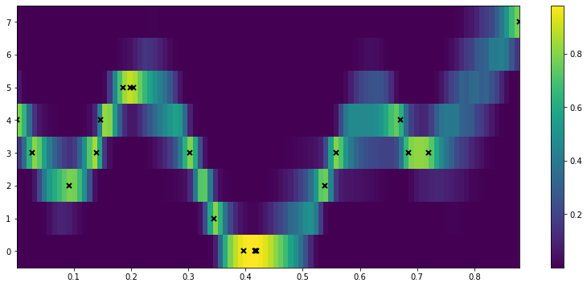
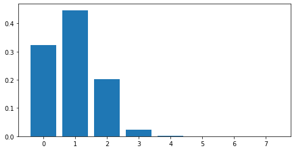

Ordinal regression¶
Ordinal regression aims to fit a model to some data \((X, Y)\), where \(Y\) is an ordinal variable. To do so, we use a VPG model with a specific likelihood (gpflow.likelihoods.Ordinal).
[1]:
import gpflow
import tensorflow as tf
import numpy as np
import matplotlib.pyplot as plt
%matplotlib inline
plt.rcParams["figure.figsize"] = (12, 6)
np.random.seed(123) # for reproducibility
[2]:
# make a one-dimensional ordinal regression problem
# This function generates a set of inputs X,
# quantitative output f (latent) and ordinal values Y
def generate_data(num_data):
# First generate random inputs
X = np.random.rand(num_data, 1)
# Now generate values of a latent GP
kern = gpflow.kernels.SquaredExponential(lengthscales=0.1)
K = kern(X)
f = np.random.multivariate_normal(mean=np.zeros(num_data), cov=K).reshape(-1, 1)
# Finally convert f values into ordinal values Y
Y = np.round((f + f.min()) * 3)
Y = Y - Y.min()
Y = np.asarray(Y, np.float64)
return X, f, Y
np.random.seed(1)
num_data = 20
X, f, Y = generate_data(num_data)
plt.figure(figsize=(11, 6))
plt.plot(X, f, ".")
plt.ylabel("latent function value")
plt.twinx()
plt.plot(X, Y, "kx", mew=1.5)
plt.ylabel("observed data value")
2022-03-18 10:06:49.283950: I tensorflow/stream_executor/cuda/cuda_gpu_executor.cc:936] successful NUMA node read from SysFS had negative value (-1), but there must be at least one NUMA node, so returning NUMA node zero
2022-03-18 10:06:49.287347: W tensorflow/stream_executor/platform/default/dso_loader.cc:64] Could not load dynamic library 'libcusolver.so.11'; dlerror: libcusolver.so.11: cannot open shared object file: No such file or directory
2022-03-18 10:06:49.287857: W tensorflow/core/common_runtime/gpu/gpu_device.cc:1850] Cannot dlopen some GPU libraries. Please make sure the missing libraries mentioned above are installed properly if you would like to use GPU. Follow the guide at https://www.tensorflow.org/install/gpu for how to download and setup the required libraries for your platform.
Skipping registering GPU devices...
2022-03-18 10:06:49.288614: I tensorflow/core/platform/cpu_feature_guard.cc:151] This TensorFlow binary is optimized with oneAPI Deep Neural Network Library (oneDNN) to use the following CPU instructions in performance-critical operations: AVX2 FMA
To enable them in other operations, rebuild TensorFlow with the appropriate compiler flags.
[2]:
Text(0, 0.5, 'observed data value')

[3]:
# construct ordinal likelihood - bin_edges is the same as unique(Y) but centered
bin_edges = np.array(np.arange(np.unique(Y).size + 1), dtype=float)
bin_edges = bin_edges - bin_edges.mean()
likelihood = gpflow.likelihoods.Ordinal(bin_edges)
# build a model with this likelihood
m = gpflow.models.VGP(data=(X, Y), kernel=gpflow.kernels.Matern32(), likelihood=likelihood)
# fit the model
opt = gpflow.optimizers.Scipy()
opt.minimize(m.training_loss, m.trainable_variables, options=dict(maxiter=100))
2022-03-18 10:06:49.456941: W tensorflow/python/util/util.cc:368] Sets are not currently considered sequences, but this may change in the future, so consider avoiding using them.
[3]:
fun: 25.487470477487047
hess_inv: <233x233 LbfgsInvHessProduct with dtype=float64>
jac: array([-6.65482792e-02, -2.28011094e-02, -4.10331104e-02, -4.42627418e-02,
-6.76994496e-02, -2.98011020e-02, -6.97511637e-02, -4.67811016e-04,
-1.28365467e-02, 2.16799746e-02, 5.08941935e-03, 1.45547171e-02,
6.88426919e-03, -2.41224436e-02, -9.48170239e-03, -2.19859908e-02,
-2.05467585e-04, -1.22032380e-02, -2.20537165e-02, -1.67117284e-03,
2.77558580e-04, -4.07676425e-04, -5.72485098e-09, 2.48512752e-06,
-1.87613440e-09, -7.61132102e-06, 1.94440349e-11, -6.40226130e-03,
1.98085263e-08, 2.41774976e-06, -2.43871182e-07, -2.07220555e-05,
1.54185927e-04, -3.35571882e-03, 2.68769104e-04, 4.67488855e-05,
1.87349895e-04, -1.87075004e-04, -1.52141097e-04, 3.49573448e-04,
-2.59341003e-02, 7.38025918e-03, -3.48153857e-09, 1.01544739e-06,
-2.16878450e-10, 4.48229323e-04, 1.26772760e-11, -1.31505057e-03,
1.42452956e-08, 1.72877352e-07, -4.68453744e-07, -1.70397529e-05,
9.67499997e-05, 2.67820614e-03, -1.21331960e-03, -1.31539205e-02,
1.63548390e-03, -1.34677623e-03, -4.01958872e-04, -8.42956290e-04,
1.30852862e-02, 3.10825813e-02, -1.37891848e-02, -5.81727766e-04,
-5.26061617e-03, -2.84808995e-09, -1.51826941e-04, -6.49921089e-07,
-8.71770858e-03, 4.66246333e-03, -2.30823654e-02, -8.98120884e-04,
-7.03403632e-04, -5.79634199e-05, -4.16271734e-04, 6.33038296e-05,
-7.47499160e-03, -3.56795892e-04, 2.50168079e-03, 3.24804117e-03,
-2.16233481e-02, -1.00909264e-02, -6.66105808e-02, -1.95515266e-05,
-8.15485894e-05, -2.65275252e-08, -2.20500837e-06, 3.82557557e-06,
-1.25829646e-04, 7.31918817e-05, -3.69209769e-04, -1.79144839e-05,
-1.29683386e-05, 1.74288971e-06, -6.48552173e-06, 1.63472619e-06,
-1.16533766e-04, -5.29125623e-06, 4.07042889e-05, -1.78211942e-05,
3.77690070e-03, -2.38226907e-02, -3.23549979e-02, 1.59620787e-02,
2.43412582e-02, -1.65233061e-09, 4.12675097e-05, -3.23306484e-07,
1.79293668e-02, 8.80523692e-04, -5.92348433e-03, -6.05228126e-04,
-4.29061540e-03, -2.70107404e-05, 6.33272833e-04, 3.53920300e-04,
-4.95085938e-03, 8.70060777e-04, -4.18799383e-03, -8.09859157e-06,
-2.67041191e-02, -3.05997587e-02, -5.91385078e-02, 5.05747012e-02,
-1.71623151e-02, -1.32902931e-03, 7.45973108e-11, 8.92101065e-05,
-2.86595758e-08, -2.63708394e-06, 1.28404794e-06, -3.43501114e-06,
2.12480794e-04, -1.21357176e-03, 3.46221253e-04, 7.34346924e-03,
-3.13980980e-03, -1.21033260e-02, 2.05415073e-04, -4.64325996e-04,
-2.25410284e-02, -1.01492933e-03, 5.84196436e-03, -8.31480497e-03,
1.51740827e-02, 1.24359456e-02, -4.63549998e-03, 9.49243555e-09,
1.48145850e-02, -7.98858002e-05, 3.50859581e-03, 8.56290952e-04,
-3.97727785e-03, 7.05717959e-04, 1.40914591e-03, 1.11314470e-04,
1.03747031e-02, -1.03133396e-03, 5.89783703e-03, 6.12019068e-03,
1.31142733e-02, -6.94945065e-03, -8.77972016e-03, 3.47435536e-03,
-1.32934317e-02, 7.23586436e-03, -2.55926494e-02, 1.14888923e-02,
4.14225296e-07, -9.61651344e-05, -7.13228787e-06, -8.85671255e-04,
3.20724486e-03, -1.14173652e-02, 4.38266654e-03, 1.30171502e-03,
1.27924069e-03, -1.19806804e-03, -1.73452399e-03, 3.55347773e-03,
6.82831128e-03, -1.08854421e-04, 3.09663294e-04, -1.50953628e-02,
-4.94313579e-03, 7.44792614e-05, 5.97823614e-03, 7.36015811e-03,
-8.48815128e-03, -5.85041430e-04, 5.19347404e-03, -2.70607876e-03,
-2.18095111e-02, 3.16616151e-06, 3.82129358e-03, 1.86778718e-03,
-2.04992385e-02, 5.59729280e-03, 1.25365618e-02, -3.92868360e-03,
9.77589097e-04, 5.74138277e-04, 4.45949676e-04, 1.26726598e-02,
-3.52411611e-04, 7.33145240e-04, -3.43104390e-04, 2.79855493e-03,
1.18075865e-02, -8.33277793e-04, 8.20941777e-04, 1.62535752e-04,
8.15731699e-04, 4.18787011e-05, -8.13929159e-05, -6.60589823e-05,
1.62099712e-03, -1.60702687e-04, -7.80567068e-04, -2.65167430e-03,
6.97977738e-03, 3.00029809e-03, -6.50974064e-04, -6.91986612e-02,
1.45574820e-03, -2.02419559e-03, 3.70928132e-03, -6.58496841e-03,
-7.01642799e-03, -3.52647198e-05, 1.25209562e-01, -8.32970706e-03,
-1.00396882e-02])
message: 'STOP: TOTAL NO. of ITERATIONS REACHED LIMIT'
nfev: 116
nit: 100
njev: 116
status: 1
success: False
x: array([-1.99973507e+00, -2.36106014e-01, -8.88950231e-04, 7.62047389e-01,
-1.98110852e-01, -1.59229729e+00, 7.93681577e-01, -3.86889635e-01,
-1.13949872e-01, 3.78716109e-01, -8.98007865e-02, 3.46381679e-01,
-7.61846764e-02, 1.59570909e+00, -2.61505459e-01, 8.54327746e-01,
6.56880248e-03, 4.46001417e-01, -3.20365109e-01, 6.90522685e-04,
9.88817853e-01, -2.80824927e-03, 6.18784910e-08, 1.28533951e-05,
1.00558904e-08, 1.33405300e-04, 5.89551639e-11, -6.28875301e-02,
7.68178603e-09, -1.38969408e-04, -1.17838966e-05, -7.71515631e-04,
2.21555882e-03, -6.31938620e-02, 1.79725561e-03, -3.69556992e-03,
-2.79571210e-03, 1.02877805e-05, 4.53908217e-06, 3.23323905e-05,
2.24967549e-01, 9.45886629e-01, 3.60354837e-08, 6.94167470e-06,
6.70474894e-09, 8.43115306e-03, 3.48936608e-11, -2.24840100e-02,
7.58195183e-09, -4.44197992e-05, -4.05352864e-06, -2.51109800e-04,
7.33512760e-04, 2.99273658e-02, -3.30685715e-02, -2.28129531e-01,
1.38893404e-03, -7.87974067e-04, 1.12013359e-05, -9.02922037e-06,
-1.92226109e-02, 1.41991779e-01, 6.14727350e-01, -9.80894462e-03,
-1.31907731e-01, -4.48108569e-08, -6.29714658e-04, -1.33375023e-05,
1.21348315e-02, 7.00032255e-02, -3.90308924e-01, -3.17501863e-02,
-8.18888591e-03, -2.86406174e-04, -3.04797075e-05, -1.67377067e-07,
1.74985874e-03, -5.42130485e-05, 2.23708887e-02, 4.28758482e-02,
-5.42741033e-03, 3.53010317e-04, 1.37478718e-01, 9.99917312e-01,
-2.04363826e-03, -4.50334169e-07, -9.60871806e-06, 3.04958051e-05,
1.97229939e-04, 1.07912582e-03, -6.05900275e-03, -4.88684129e-04,
-1.28209179e-04, 2.44421575e-05, 2.21559925e-07, 1.20153934e-05,
2.74078342e-05, -7.17980902e-07, 3.48428003e-04, -1.75272621e-04,
-1.52910078e-01, 3.75832737e-03, -1.23789086e-02, 1.69803943e-01,
7.18771052e-01, -1.66881797e-08, -4.40753813e-03, -4.47482648e-06,
-4.24396739e-01, 2.30615263e-02, -8.94045201e-02, -1.37519921e-02,
-3.75861609e-03, -9.54115638e-05, 3.86714161e-05, 2.32820141e-05,
7.92635445e-04, 3.85342568e-05, 4.30465894e-02, 1.76200960e-02,
3.15223900e-02, -7.24675583e-04, -6.33868195e-02, -7.06778710e-02,
1.09864108e-01, 5.73035709e-01, -2.04467126e-10, 1.13192405e-02,
-1.83498169e-08, 2.11808827e-05, 2.17018938e-06, 1.15327185e-04,
-2.48794531e-04, -2.39822377e-02, -1.74611803e-01, 4.90762416e-02,
-4.37778536e-04, -3.00788756e-01, -9.22197262e-05, 2.30068757e-04,
-1.29006345e-02, -1.19659731e-04, -1.25980727e-01, 3.06796476e-02,
-1.41215997e-01, 3.20209507e-01, 1.62203867e-01, -2.34521968e-07,
5.21908550e-02, 1.25365593e-03, -2.20292382e-03, -9.54802411e-04,
-5.62928321e-04, 1.88365869e-05, 8.06665318e-05, 2.19577195e-05,
1.89869022e-04, 2.91274858e-05, -1.13133935e-01, 8.99645495e-04,
3.53489867e-02, -7.31890260e-04, -2.02204063e-02, -9.81245241e-02,
-2.11319512e-01, 1.18283561e-01, 3.07491970e-01, 6.84416177e-01,
-2.34986078e-06, -2.49204055e-03, -2.14507967e-04, -1.36727050e-02,
3.84321071e-02, -4.85660167e-01, 6.70934600e-03, -3.72243739e-02,
-6.34279486e-02, 7.17549017e-03, -3.42841616e-05, 3.32851329e-04,
-2.12537167e-01, 4.21399542e-03, -9.05005700e-04, -2.67076624e-01,
-9.12473222e-03, 1.82205014e-03, 5.99705061e-02, 4.20819043e-01,
2.69432099e-01, 3.30855855e-02, -6.13277164e-02, -2.50656269e-02,
-7.41799897e-03, -4.92839843e-05, 2.49770763e-04, 1.13665433e-04,
9.36287131e-04, 3.12953803e-04, -2.73073300e-01, 2.97713887e-02,
-8.59037069e-02, 5.73175826e-03, 3.08365434e-04, 8.21119838e-03,
-6.95164931e-04, 2.05160640e-04, -1.22903045e-02, -5.97397972e-02,
9.07757568e-01, 9.94613822e-01, 4.55107671e-02, 5.61538627e-03,
1.55954925e-03, -2.06785274e-03, 2.30053720e-05, -1.28025065e-04,
-5.98762243e-04, 3.59160814e-05, 5.40212362e-03, -2.59290903e-02,
-2.08566145e-01, -4.35796479e-02, -2.78265262e-05, -1.18714097e-02,
-1.90978292e-04, -4.28969217e-05, -2.18251400e-04, 5.09965450e-02,
2.04370047e-01, 1.67917646e-01, -1.97907241e+00, 5.46706876e+00,
-1.44968285e+00])
[4]:
# here we'll plot the expected value of Y +- 2 std deviations, as if the distribution were Gaussian
plt.figure(figsize=(11, 6))
X_data, Y_data = (m.data[0].numpy(), m.data[1].numpy())
Xtest = np.linspace(X_data.min(), X_data.max(), 100).reshape(-1, 1)
mu, var = m.predict_y(Xtest)
(line,) = plt.plot(Xtest, mu, lw=2)
col = line.get_color()
plt.plot(Xtest, mu + 2 * np.sqrt(var), "--", lw=2, color=col)
plt.plot(Xtest, mu - 2 * np.sqrt(var), "--", lw=2, color=col)
plt.plot(X_data, Y_data, "kx", mew=2)
[4]:
[<matplotlib.lines.Line2D at 0x7f8170469090>]

[5]:
## to see the predictive density, try predicting every possible discrete value for Y.
def pred_log_density(m):
Xtest = np.linspace(X_data.min(), X_data.max(), 100).reshape(-1, 1)
ys = np.arange(Y_data.max() + 1)
densities = []
for y in ys:
Ytest = np.full_like(Xtest, y)
# Predict the log density
densities.append(m.predict_log_density((Xtest, Ytest)))
return np.vstack(densities)
[6]:
fig = plt.figure(figsize=(14, 6))
plt.imshow(
np.exp(pred_log_density(m)),
interpolation="nearest",
extent=[X_data.min(), X_data.max(), -0.5, Y_data.max() + 0.5],
origin="lower",
aspect="auto",
cmap=plt.cm.viridis,
)
plt.colorbar()
plt.plot(X, Y, "kx", mew=2, scalex=False, scaley=False)
[6]:
[<matplotlib.lines.Line2D at 0x7f8170346aa0>]

[7]:
# Predictive density for a single input x=0.5
x_new = 0.5
Y_new = np.arange(np.max(Y_data + 1)).reshape([-1, 1])
X_new = np.full_like(Y_new, x_new)
# for predict_log_density x and y need to have the same number of rows
dens_new = np.exp(m.predict_log_density((X_new, Y_new)))
fig = plt.figure(figsize=(8, 4))
plt.bar(x=Y_new.flatten(), height=dens_new.flatten())
[7]:
<BarContainer object of 8 artists>
